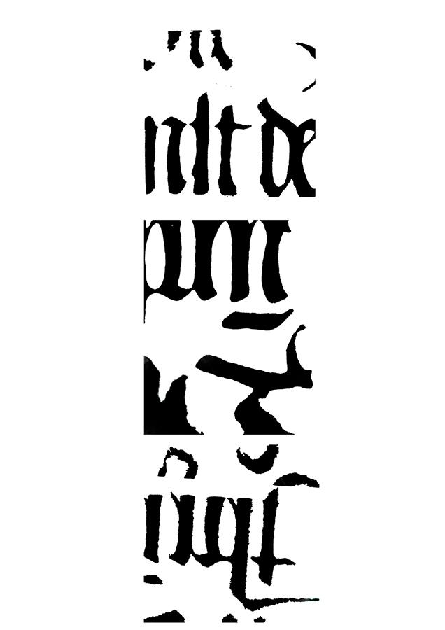
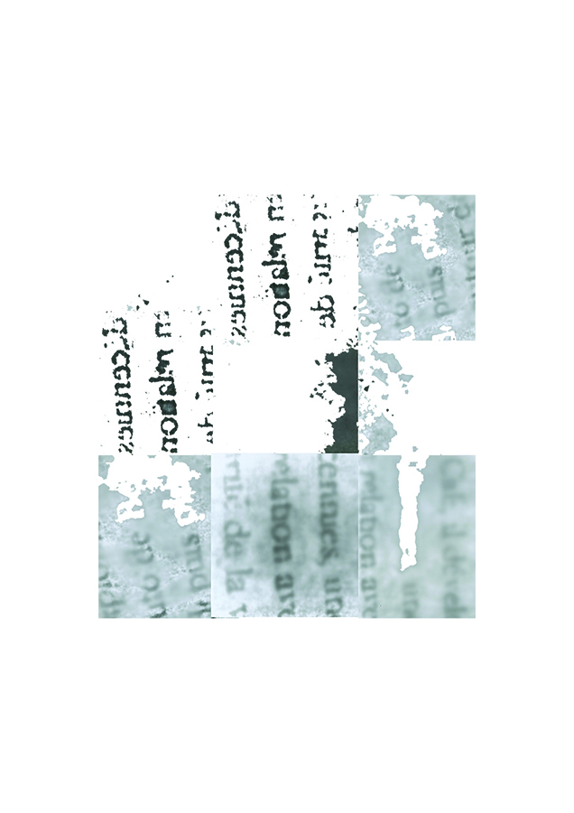
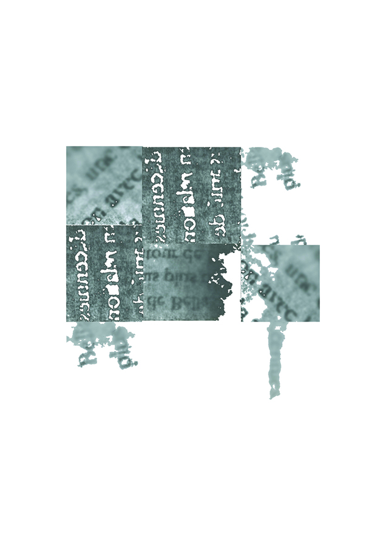
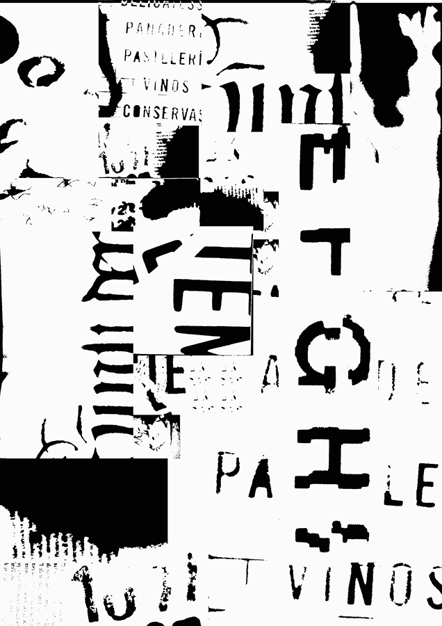
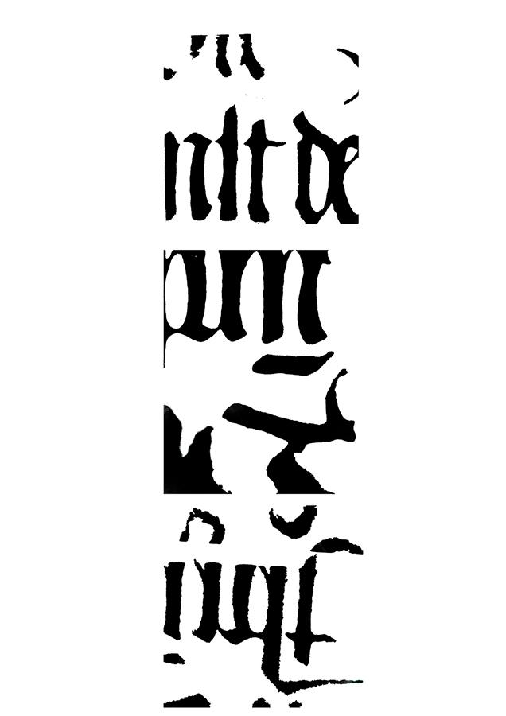
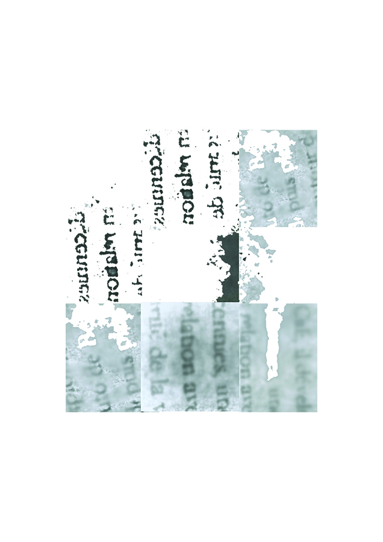
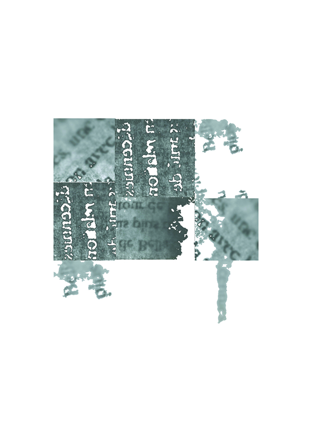
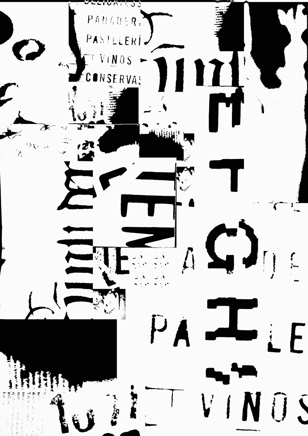

Projet à l'origine de la technique du photogramme. Questionnement et approfondissement technique et conceptuel autour de ce procédé. Questionnement autour de la lettre en tant que forme, son apparition, sa disparition, analyser et comprendre la corporéité de la lettre. /
Project based on the technique of photogram. Questioning around the letter as a form, its appearance, its disappearance, analyze and understand the corporeality of the letter.